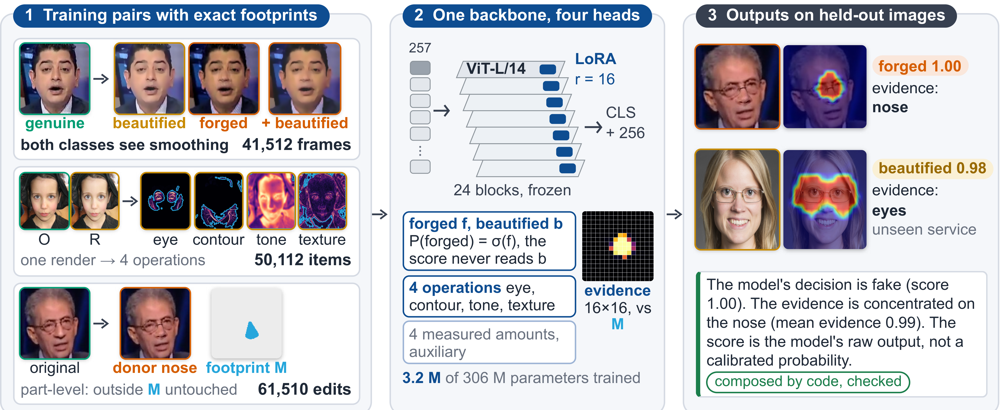
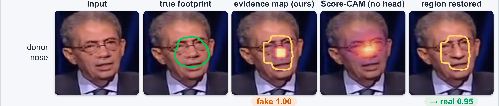
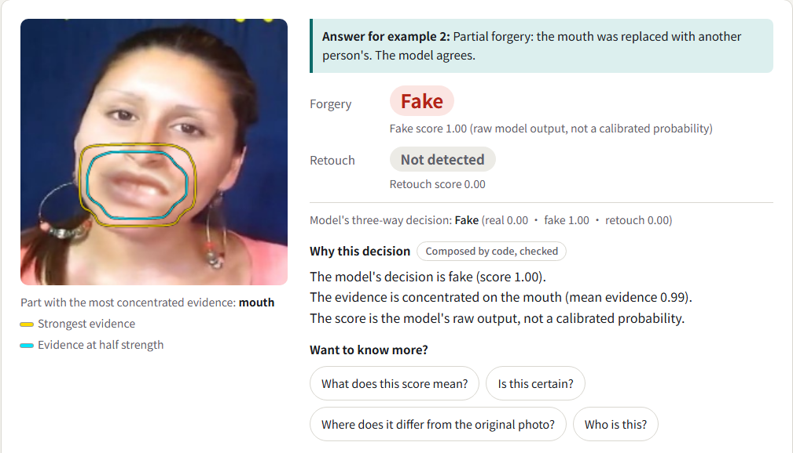

Beautified Is Not Forged
分得出美顏與偽造、證據可以查核的人臉偵測系統
以前的偵測器只有 real / fake 兩個答案。經過美顏的真人照片兩邊都不是，於是被判成假的。我們把 beautified 做成第三類，每個判定都附上可以驗證的 evidence。
1
同一個美顏，讓 deepfake 偵測器犯兩種錯
17 個已發表偵測器，官方權重，逐張重跑
(a) 真人照片，磨皮後被判成假


商用修圖
Smoothing-90
Smoothing-90
genuineaccused
False alarm：四個偵測器全都從 genuine 翻成 forged。
(b) 換臉影片，美顏後被放過


手機 app
美顏預設
美顏預設
forgedmissed
Miss：同樣四個，有三個讓這支換臉通過。
我們：三個答案 + evidence
real
beautified
forged
forged
美顏過的換臉還是 forged
美顏過的換臉還是 forged
模型給 forged 和 beautified 兩個分數；forged 的判定只看 forged 分數，美顏分數再高也搶不走。evidence head 標出判定依據的部位。
16 / 17
已發表偵測器把磨皮真人判得比原圖更假
36–69%
其中 13 個在自己門檻下把這麼多磨皮真人判成 forged；我們 8.6%
2
方法：拆開商用修圖，兩類都看過美顏，evidence 用精確 footprint 監督

1 Data engine
商用 app 一次套好幾種美顏。用 optical flow 把形狀變化拆成 eye 和 contour，殘差用低通濾波拆成 tone 和 texture；每個分量都有像素對齊的原圖，footprint M 因此精確。18,734 張修圖 → 50,112 筆單一操作。2 Model
CLIP ViT-L/14 全部凍結，只在 24 層 attention 加 LoRA r=16，訓練 3.16 M 個參數。CLS token 接 classification、operation、quantity 三個 head；256 個 patch token 接 evidence head，輸出 16×16 evidence map，用 M 監督。3 Output
evidence map 對到臉部部位，點名最強的一個。說明文字不用語言模型：程式依模型輸出組句，每句顯示前都經過規則檢查，不符合的句子不會出現。3
成果
數字皆來自書面報告，主模型 seed 1原因：訓練時哪一類看過磨皮
同模型、同資料、同 recipe。磨皮真人在 5% FPR 下被判 forged 的比例：P1 最低，但磨皮過的換臉多漏掉 51 點；P2 兩邊都好。
三類判定，以及訓練沒見過的修圖服務
82.7 / 90.9 / 86.7
FF++ 測試集 recall，real / forged / beautified；美顏被判 forged 只有 4.3%
98.8%
阿里（訓練沒見過的修圖服務）的商用磨皮判成 beautified
≤ 0.8%
同一批修圖，任何操作、任何強度被判 forged 的上限
0.59 s
瀏覽器裡一張照片的時間（iPhone Safari 中位數），照片不上傳
evidence head 通過的測試，heat map 過不了

94%
還原標出的區域後，forged 判定消失（上限 94.1%）
45–57%
同一個測試，Grad-CAM / Score-CAM 這類 heat map
51–53%
VLM 自由描述盲配對 ≈ 擲硬幣；所以句子全由程式組成並檢查，361 / 361 通過
公平比較 只用同樣的 FF++ 訓練影片
0.872ours
0.838best published
Celeb-DF-B 美顏後的 AUC，高於所有已發表偵測器；對 Effort、Forensics Adapter、SBI 的配對區間不含 0。一般換臉偵測則與最新方法打平。
整套系統在瀏覽器裡執行

MediaPipe 找臉 → ONNX Runtime 跑網頁版模型（EfficientNet-B4，67 MB）→ 程式畫出 evidence 輪廓、點名部位、組句並檢查。沒有伺服器，照片不離開裝置。
nothing uploaded no server